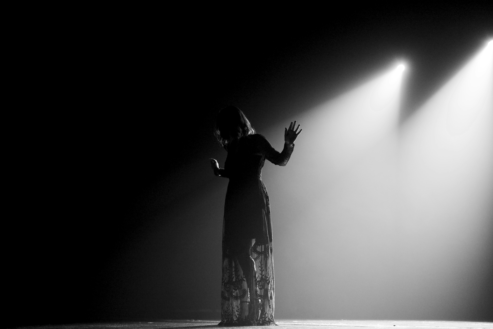

« Dom Juan » de Molière – Lecture contemporaine
Sur cette scène nue, le verbe de Molière résonne autrement.
Dom Juan n'est plus un séducteur flamboyant, mais un homme seul, cynique, presque vidé de sens.
Le choix d'une scénographie minimaliste force l'attention sur les corps et les silences. Sganarelle devient le miroir fragile d'un maître qu'il ne comprend plus.
Le texte, coupé de ses ornements classiques, devient moderne par sa brutalité. Dom Juan rit encore, mais son rire sonne creux.
Cette lecture contemporaine interroge : et si le véritable scandale aujourd'hui, c'était l'indifférence ?